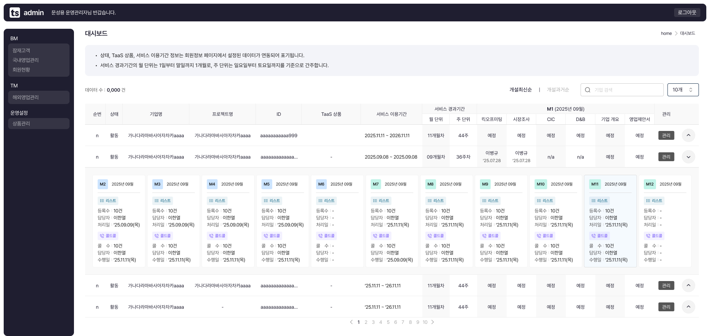
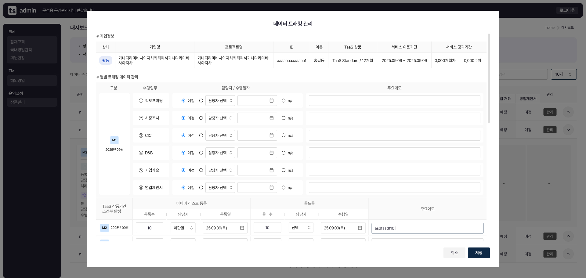
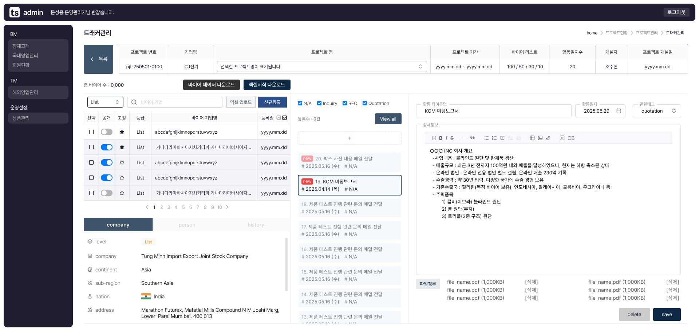
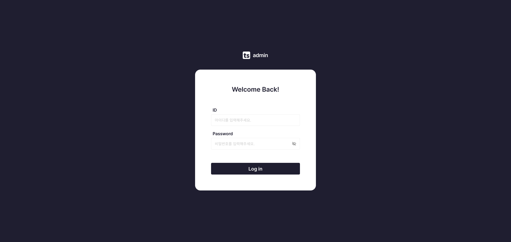
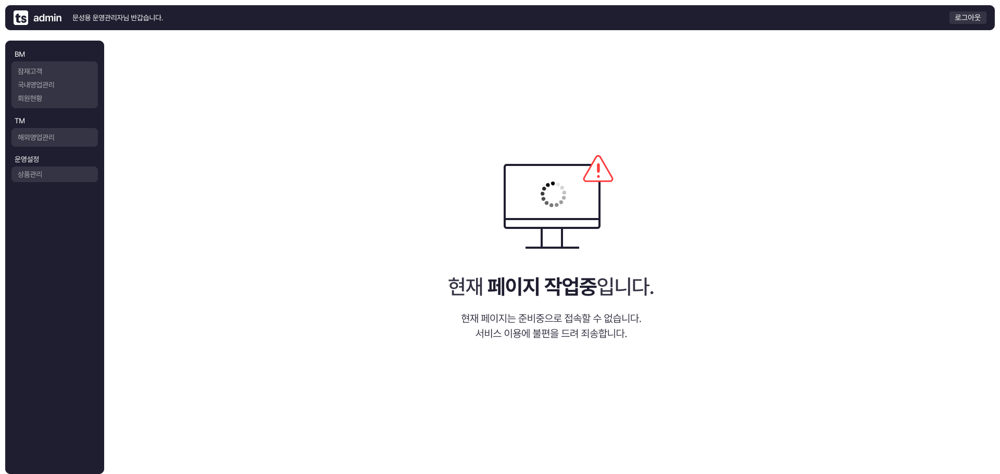

A
한 행에 요약, 펼치면 12개월
대시보드는 고객사 한 곳을 한 행으로 두고, 서비스 경과 기간과 이번 달 업무 6가지의 진행 상태만 보여줍니다. 행을 펼치면 M1~M12 월별 카드가 나와 바이어 리스트 등록 수와 콜드콜 수를 달마다 비교할 수 있습니다. "11개월차" 같은 값이 사람마다 다르게 읽히지 않도록 월 · 주를 세는 기준도 표 위에 적어 두었습니다.

/ Real Project
트레이드잇 운영진이 고객사의 영업 대행 업무를 관리하는 내부 콘솔입니다.
고객사마다 매달 진행하는 업무와 바이어 활동 기록이 한곳에 쌓여야 해서, 정보가 많은 화면에서도 지금 확인할 것과 입력할 곳이 바로 보이도록 설계했습니다. 전체 화면 디자인과 React 퍼블리싱을 맡았습니다.
고객사 대신 해외 영업을 진행하는 트레이드잇 운영진(국내 · 해외 영업팀). 고객사마다 계약 기간 동안 매달 킥오프 미팅, 시장조사, 바이어 리스트 등록, 콜드콜 같은 업무를 진행하고 기록합니다.
CRM과 함께 새로 만든 콘솔이라 기존 화면이 없었습니다. 고객사 정보, 월별 업무 진행, 바이어 활동 기록이 서로 다른 곳에 흩어지면 누가 언제 무엇을 했는지 확인하기 어려웠습니다.
정보가 많은 표를 훑어보는 화면과 입력하는 화면으로 나누는 것. 목록에서는 밀린 업무가 바로 보이고, 입력은 화면을 옮기지 않고 한곳에서 끝나게 하는 것이 목표였습니다.
운영 방식이 바뀌거나 관리할 항목이 늘면 회의로 맞춘 뒤 디자인과 코드를 함께 고쳤습니다.
대시보드는 고객사 한 곳을 한 행으로 두고, 서비스 경과 기간과 이번 달 업무 6가지의 진행 상태만 보여줍니다. 행을 펼치면 M1~M12 월별 카드가 나와 바이어 리스트 등록 수와 콜드콜 수를 달마다 비교할 수 있습니다. "11개월차" 같은 값이 사람마다 다르게 읽히지 않도록 월 · 주를 세는 기준도 표 위에 적어 두었습니다.

킥오프 미팅 · 시장조사 · CIC · D&B · 기업 개요 · 영업제안서를 예정 / 완료(담당자 · 수행일) / 해당 없음 중에서 고르고, 바이어 리스트 등록과 콜드콜 수치, 메모까지 같은 팝업에서 저장합니다. 상단에는 고객사 정보를 고정해 어느 회사를 입력 중인지 헷갈리지 않게 했습니다.

트래커는 바이어 목록 → 활동 이력 → 기록 에디터를 3열로 나란히 두었습니다. 바이어를 고르면 그 바이어의 이력이 가운데에, 선택한 기록이 오른쪽 에디터에 열려 화면 이동 없이 이어서 작성합니다. 이력은 Inquiry · RFQ · Quotation 태그로 걸러 봅니다.


